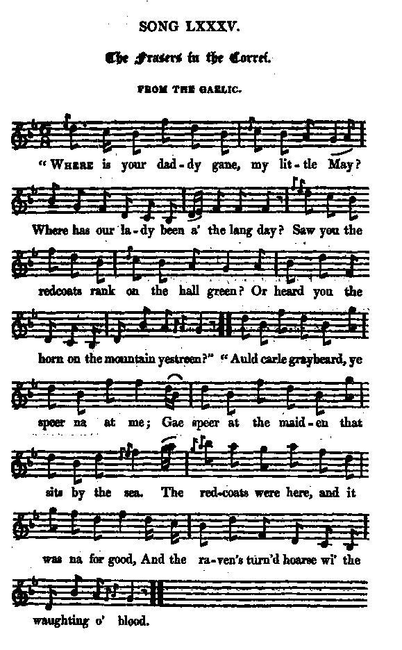

The Frasers in the Corrie
Les Fraser dans la combe
The Jacobites In Their Hiding Places
Tune - Mélodie"Nach bochd a bhi'm falach" (Everyone must hide)
from Captain Simon Fraser's "Collection", N°122, page 48, 1815
Variant
from "Jacobite Relics, vol.2, 85, page 160, 1821
Tunes sequenced by Christian Souchon

|
To the tune:
Published in "Simon Fraser's Collection N°122", in 1815 under the title "Nach bochd a bhi'm falach" which he translates as "The Jacobites in their hiding Places". Captain Simon Fraser notes that both his grandfathers and others were forced to hide from a pursuit of dragoons, while the Duke of Cumberland's army were residing in the vicinity of Inverness and Fort Augustus, although they had all signed "a spontaneous memorial professing their fidelity to the reigning family... being firm Protestants." The same tune with lyrics transcribed "from the Gaelic", and apparently exceedingly spun out, appears in James Hogg's "Jacobite Relics", volume 2, in 1821 under N°85, titled "The Frasers in the correi", accompanied by the following note: "I must beg pardon of the Highlanders for adding so much to the original ideas in this song, by which it is nothing improved. Frazer has a fuller set of the air, I believe, to the same name." |
A propos de la mélodie:
Publiée dans "Simon Fraser's Collection N°122" en 1815, sous le titre "Nach bochd a bhi'm falach" qu'il traduit "Les Jacobites dans leurs cachettes". Le Capitaine Simon Fraser note que ses deux grands-pères et d'autres furent forcés de se cacher pour échapper aux poursuites des Dragons, alors que l'armée de Cumberland était stationnée au voisinage d'Inverness et de Fort Augustus, bien qu'ils aient tous signé "un mémoire spontané où ils professaient leur attachement à la famille régnante...en tant que bons Protestants." La même mélodie avec un texte transcrit "du gaélique", et, semble-t-il, outrageusement délayé, apparait en 1821 dans le recueil de Hogg, "les Reliques Jacobites", vol.2, sous le N°85 et le titre "Les Fraser dans la combe", accompagnée de cette note: "Je demande pardon aux Highlanders pour les ajouts superfétatoires que j'ai faits aux idées d'origines exprimées dans ce chant. Fraser présente une version plus riche de la mélodie, sous le même titre, je crois." |

|
THE FRASERS IN THE CORRIE
From the Gaelic (*) 1. " Where is your daddy gane, my little May? " Where has our lady been a' the lang day ? " Saw you the redcoats rank on the hall green? "Or heard you the horn on the mountain yestreen?" - " Auld carle graybeard, ye speer na at me; Gae speer at the maiden that sits by the sea. The redcoats were here, and it was na for good, And the raven's turn'd hoarse wi' the waughting o' blood." 2. " O listen, auld carle, how roopit his note! " The blood of the Fraser's too hot for his throat. " I trow the black traitor's of Sassenach breed ; " They prey on the living, and he on the dead. " When I was a baby, we ca'd him, in joke, " The harper of Errick, the priest of the rock; " But now he's our mountain companion no more, " The slave of the Saxon, the quaffer of gore." 3. " Sweet little maiden, why talk you of death ? " The raven's our friend, and he's croaking in wrath: " He will not pick up from a bonnetted head, " Nor mar the brave form by the tartan that's clad. " But point me the cliff where the Fraser abides, " Where Foyers, Culduthil, and Gorthaly hides. " There's danger at hand, I must speak with them soon, " And seek them alone by the light of the moon." 4. " Auld carle graybeard, a friend you should be, " For the truth's on your lip, and the tear in your e'e; " Then seek in the correi that sounds on the brae, " And sings to the rock when the breeze is away. " I sought them last night with the haunch of the deer, " And far in yon cave they were hiding in fear: " There, at the last crow of the brown heather-cock, " They 'pray'd for their prince, kneel'd, and slept on the rock. 5. " O tell me, auld carle, what will be the fate " Of those who are killing the gallant and great? " Who force our brave chiefs to the correi to go, " And hunt their own prince like the deer or the roe ?" " My sweet little maiden, beyond yon red sun . " Dwells one who beholds all the deeds that are done: " Their crimes on the tyrants one day he'll repay, " And the names of the brave shall not perish for aye." (*) To know the meaning of this phrase click here Source: "The Jacobite Relics of Scotland, being the Songs, Airs and Legends of the Adherents to the House of Stuart" collected by James Hogg, volume 2 published in Edinburgh by William Blackwood in 1821. |
LES FRASERS DANS LA COMBE
Traduit du gaélique (*) 1. - Mais où donc est ton père, petite Marie? Et je n'ai pas vu sa femme, aujourd'hui. As-tu vu les Habits rouges tous en rangs? As-tu hier entendu dans les monts l'olifant? - Barbe grise, à d'autres pose la question Les filles sur la grève te le diront. Les Habits rouges étaient là, menaçants, Le corbeau s'égosillait flairant le sang! 2. Ecoute, vieil homme, comme sa voix faiblit Le sang des Fraser est trop chaud pour lui. Ce traître noir serait-il saxon aussi: Il s'en prend aux morts, l'Anglais à tout ce qui vit. Quand j'étais enfant, nous appelions le freux "Harpiste d'Errick", "prêtre du roc", par jeu; Mais il n'est plus pour nous ce gentil compagnons: Il se bâfre de sang, ce valet des Saxons! 3. - Jeune fille, pourquoi parles-tu donc de mort? Notre ami le corbeau déplore notre sort. Il épargne la tête coiffée du bonnet Et ne profane pas le corps portant le plaid. Mais dis-moi le récif où sont les Fraser, Où sont Culduthil, Gorthaly et Foyers. Le danger est imminent. Je dois leur parler. C'est pleine lune. Seul, ce soir, vers eux j'irai. 4. - Barbe Blanche, je crois reconnaître un ami Aux mots sur tes lèvres, à la larme qui luit. Vas voir dans la combe au flanc de ce versant Dont les rocs se découvrent quand s'apaise le vent La nuit dernière, je leur portais un cuissot: Ils étaient dans la caverne près de l'eau On venait d'entendre le dernier chant du coq. Ils priaient pour le Prince et dormaient sur le roc. 5. O dis-moi, noble vieillard, quel sera le sort De ceux qui pourchassent les vaillants et les forts? Et qui forcent nos chefs à fuir dans le désert, Traquent le Prince, comme s'il était un cerf? - Jeune fille, au-delà du rouge soleil Il est un Dieu. Son savoir est sans pareil Un jour, il punira les crimes du tyran, Et glorifiera le brave éternellement. (*) Pour connaître le sens que donne Hogg à ces mots, cliquer ici . (Trad. Christian Souchon (c) 2010) |
|
From FRASER'S MAGAZINE FOR TOWN AND COUNTRY N°49, Volume 9, January 1834,
THE FRASERS IN THE CORRIE. BY THE ETTRICK SHEPHERD. Although the half of the clan Fraser was not in the battle of Culloden, yet those who were there suffered severely ; and there was no clan more persecuted and harassed afterwards, owing to their extensive domains lying all around the relentless Duke of Cumberland's headquarters . Lovat's lands lying so open and accessible, were completely harried, the habitations of his people burnt, and great numbers of them butchered in cold blood. The first time I was there, I was shewn the ruins of a house, or rather apparently a hamlet, to which a horrible tradition was annexed. There was an old white-headed man, a Mr. Chisholm, who told me that there an English officer of the name of Rowe, and a party of soldiers, violated seven beautiful sisters of the name of Fraser, daughters of Simon Fraser of that place (Dalseurach), and afterwards burnt them and their mother and house to ashes. But it is not safe for me to begin writing on that subject, for I always get so indignant, that I am apt to say things I should not say. Well, but though Lovat's lands were completely harried, and his clan sorely thinned, the chieftains of the clan, although persecuted to the last, shifted wonderfully, both for themselves, their vassals, and even their substance . Their fastnesses about Strath-Errick, Payers, and Kilbogie , were so impervious that Duke William's soldiers knew they would not venture into them ; and if it had not been for the Argyle regiment , the subordinate and independent chieftains of the clan Fraser would have escaped with little damage. The English soldiers could not keep a foot upon their hills, but kept scrambling and creeping on all-fours. They could not catch one pony, goat, or sheep ; and had it not been for the Campbells, the cattle would mostly have escaped likewise; but many hundreds of these were secured and brought to the market at head-quarters. The Frasers were then a very powerful clan, and, exclusive altogether of their brethren the Suttons, on a signal from Melfarvony, they could in any one day have mustered a thousand stout hardy soldiers. Nor even in this desperate period did they ever submit to their hardships patiently, or suffer their spoilers to go with impunity, if any sort of retaliation lay in their power. All the straggling red-coats, looking after plunder, they popped quietly off, stripped them of their jackets, and tossed them into Foyers or Loch Ness, always observing in Gaelic, " You will not soon come back to plague us again." They had not been uniformly correct in this remark, if the following singular traditionary story be at all true. There were two gentlemen of the name of Fraser remained long in hiding, in a bothy in a place called CORREY-GARY , a place perfectly inaccessible save by one very narrow and almost impassable footpath, and that they were obliged to watch alternately night and day. Now, though these gentlemen were both of the name of Fraser, yet they had other names which I do not pretend thoroughly to understand ; for the patronymics among the clans are endless. The one was called Ewan Borb , and the other Angus Caoch More : the former a gentleman of distinction and large property, but notorious for an irritable temper; the other was a cadet of his family, a duinevassal, of which Highland gentlemen have all so many. He was a powerful and gigantic man, with very little comprehension, but an unalterable attachment to the chieftain of his house, —a virtue among these primitive people which no earthly casualty can efface, although the other abused him sometimes like a tinkler, generally for his stupidity. Ewan had been abroad from his infancy, first at the court of St. Germain, where his irritability of temper got him into unceasing squabbles; and after killing three gentlemen in duels, and being about ten times wounded, he was banished from France. He engaged in the wars on the Rhine, where his bravery soon got him the command of a company; and as soon as he heard that Prince Charles was in Scotland, he hasted home and raised his vassals, to the amount of one hundred and sixty, who were the first of the Frasers that joined the Prince . They were a set of brave, resolute fellows, and suffered severely at the battle of Culloden ; and had the rest of the clans rushed on with the same energy as the Frasers and McIntoshes, there would have been other accounts of the battle. But the McDonalds took the pet, and would not fight; and the Atholemen were so annoyed by a flank fire that they could not advance; so that the centre regiments, who alone made the charge, were thus exposed and cut to pieces by the grape-shot and the bayonets. Ewan made his escape along with the prince, whom he conducted as far as his own country; and the next day parted with him, and betook himself to his fastnesses. Angus More was taken prisoner; and among the rest, bloody, hungry, half naked, and shivering, was placed among his hapless compeers, in a square of red-coats, like sheep for the slaughter. General Hawley , who came round giving some orders, used some very derisive language regarding the miserable appearance of the prisoners, and,cursing them for a set of savage dogs for presuming to subvert the government, said they were not even worth killing. Colonel John Campbell, duke of Argyle , who, though a Whig and a strenuous supporter of the Protestant throne, was still a Scots Highlander every inch of him, and could not endure to hear this obloquy thrown upon his countrymen, " General," said he, " I could venture that forlorn horde, man to man, with your best troops sword in hand, and stake ten thousand pounds on the issue." " I have swordsmen, colonel," said Hawley, " whom I would stake against all Europe. " Very well," said Argyle; " call out the best that you have, and we shall have one trial at least. But remember I know nothing about one of these men, while you know the prowess of every one of yours. I must have odds." "That you shall, Colonel Campbell," said Hawley ; " I'll give ten to one.— Mountford, will you fight one of these miserable wretches for me, sword in hand ?" " That I will, general," said a handsome young subaltern, stepping forward ; " half a dozen of them, if you so please." Argyle took a look over the desolate group, not one of whom he knew anything about; but perceiving the gigantic size of Angus More, he asked him if he would fight that Sassenach for him, on the condition that he should have his liberty if conqueror? Angus had not even the comprehension to be afraid ; and he answered in hes broken English, in which language Argyle had addressed him, " Huh, yes inteet, and tat she will, master; hersel will pe blighting tem, every soul of tem, one after the other." Argyle then loosed his own good gold-hilled sword from his side, and put it into the hand of Angus Caoch More Fraser, bidding him remember that the honour of the Highland clans depended on the prowess of his arm that day. Angus turned up his great stupid face, not in the least comprehending the meaning of the injunction, but merely understanding that he was bound of necessity to kill the man opposed to him. Young Mountford squared and crossed his sword. Angus neither squared, took his balances, nor crossed his sword; but stepping deliberately forward, he clove his adversary from the left shoulder nearly to the belt at the very first stroke. Mountford had reared a guard ; but Eraser's arm was too long and too heavy to be warded by that: it yielded before Fraser's like a willow, and the Englishman fell. The poor prisoners could not restrain their exultation. They uttered a general shout of joy; for which they were kicked and cuffed, and many of them knocked down. Argyle, with a smile on his face which he could not repress, came up to Angus, and said, " Who the devil are you, you great confounded ass?" " Ooh, hersel pe just Angus Fraser of Inchmui, away peyond Kilduthel, you know —cousin to te creat Ewan Fraser, who was her noble captain in te creat pattles." " Well, if I had been the Englishman," said Argyle, " I could have been through your body three seconds before you gave him his death-blow." " Will your honour let her nainsel keep the same sword, and try you." " No, I thank you, Angus; you have won me a great deal of money, and I would not like to kill you. But you are a free man. Go your ways home, and bless your God that your mother gave such good milk to you." Angus accordingly went home, and never rested till he found out his captain in the bothy above mentioned, who would have shot him on the steps, had he not recognised his relation's gait and gigantic form. He was glad to see him, yet abused him bitterly for corning on him by surprise; and when Angus told him by what means he had gained his liberty, Ewan laughed most heartily, shook his kinsman by the hand, and called him a Highland bullock, and all the bad names be could invent. But that night he took the watch of the steps himself, that Angus More might get a little rest, who declared he had not slept since the morning of the battle of Culloden, when he got about half-an-hour's sleep on the heather. Ewan Borb had not taken his station behind his hazel-bush half an hour that night, till, just in the dim twilight, a red-coat came posting lightly over the steps. Ewan, with a curse on his tongue, took aim at him, shot him, and he fell over the linn into the Foyers. Ewan was grievously vexed at this, for the soldier had his uniform on, which was a dangerous tell-tale. There were so many Highlanders slaughtered at this time and flung into rivers and lochs, that their bodies were floating about the shores every where ; and when the hardy and inveterate Frasers popped down a Sassenach, and got him stripped, then there was no ill done, as the bodies could not be known from each other; but here was a witness against some lurking rebels, which was sure to call a strict search. Ewan hasted across the steps, and kept sight of the body, determined to have it, until it went over the lower fall, and then, owing to the increasing darkness and the precipitancy of the rocks, he lost all sight of it, and again was obliged to return and take up his watch at the steps till day. |
The very next morning three of the Campbells came upon them, and, owing to their tartan dress, had been allowed to pass the steps unchallenged and unshot. But never was there such a retreat as the
bothy of correi-gary
; I have seen, impenetrated it, and marvelled at it. It is built on the mouth of a cavern, which runs through a limestone rock for, I think, at least two hundred yards, and has an entry out at the verge of the river; and, besides, there are so many windings, side-caverns, and stalactites, that pursuit along it was impracticable; and as both ends of the cavern were only known to a few of the Frasers, our two kinsmen were little afraid of the development of that secret.
Well, the three Argyle men having been allowed to pass the steps, on a supposition that they vere men of the clan Fraser seeking shelter, our two kinsmen retired within the entrance of the cavern, which they closed with the flag-stone made for the purpose, that left only an aperture above, and made that side of the bothy appear like a solid rock. The three Campbells entered, and the Frasers soon heard from their conversation that a high price had been put on Ewan Fraser's head , for that not even Lochiel nor Ardshiel had been a more inveterate rebel than he; and they regretted sore that they had not found him, as it would have made their fortunes, and enabled them to have taken the farm of Socket, in Glenorchy. The two Frasers instantly levelled their carabines through the aperture, and shot two of the Campbells dead; the other fled, imagining, from the echoes of the cavern, that a whole regiment of Frasers had fired upon him and his hapless associates. It was a good while before the two kinsmen could extricate themselves, and then Ewan exclaimed, "He must not escape, else we are gone." Angus, hearing that, ran, although unarmed —his gun being empty; and soon with his long strides began to overhie Campbell. The latter, seeing that he could not reach the steps without being seized, turned, took aim, and fired at Angus, who ran straight on without regarding; and it was probably that which saved him, for Campbell missed him, putting the bullet through his tartan coat only, instead of his body. The two ran on, Ewan considerably behind ; and at the end of the steps Campbell turned, and tried to defend himself with the butt of his gun. He durst not take the steps before his pursuers, for the push of a finger would have sent him headlong over the linn (waterfall); so he turned and fought, and at the first blow rather stunned Angus More, who staggered back, and seizing a huge rock, was just about to dash Campbell and it over the precipice together; when Ewan called out, " No, no! hold, and spare the brave fellow. Yield, Campbell! yield." Campbell did so, throwing down his gun, and kneeling; and Ewan Borb, being very anxious to hear the news from the head-quarters at Fort Augustus, detained him prisoner. He told him the prince was shot, and that the English camp would soon break up; for great numbers of the Campbells had gone home already, and the rest of the army could not subsist without them. That the two young men who were shot were both his cousins, and that no one in the army knew of that retreat but themselves; for they had kept it a close secret, in hopes of reaping the reward. That he himself was John Campbell, a farmer's son, of a place called Conarrish, in the braes of Strathfillan, and related to both the chiefs of the Campbells. Ewan loaded his musket, saying, " Well, my brave fellow, I am sorry for it, but necessity has no law, and life is sweet: you must submit to be shot." " I suppose I must," said Campbell; " but it is considerably against my inclination." " You see you come here seeking my life," said Ewan, " for a paltry sum of money; and now you have that life completely in your hands. Before to-morrow I should be surrounded, so that escape would be impossible." " It is all fair," said Campbell; " I cannot complain. But now that I have yielded to you as a vanquished foe and a prisoner, it is scarcely like the demeanour of a Highland chieftain to murder one in cold blood." " Ay, but how many Highland gentlemen have you dogs murdered in cold blood ?" said Fraser, gnashing his teeth. " Not I, by !" said Campbell." I never murdered one, nor acquiesced in the murder of one. And now, as I don't much like being shot deliberately, without any means of retaliation, pray might not the word of honour of one Highland gentleman to another prevent such a shameful catastrophe ? " Why, that is a secondary consideration," said Ewan ; " and I thank you for mentioning it. I believe there is not an instance on record of a Highlander, gentleman or not, betraying trust or breaking his word of honour. If you will give your word of honour as a gentleman, that you will go from this straight home to your father's house in the braes of Strathfillan, and never in your life disclose what you have seen to-day, you shall be at liberty to go." Campbell gave his word, and kept it truly; for Ewan's bothy remained safe and unmolested, and subsequently became the hiding-place of several other gentlemen of the clan. (See the song at the end of this article.) The night following this, Angus Caoch More mounted guard behind the hazelbush at the steps, and got particular charges to keep strict guard while Ewan slept. Something singular had befallen to Angus that night, but we must take his own account of it. Now it must be remembered that Ewan, who was still but a young man, had been bred abroad ; and though he spoke the French and English languages fluently, could make nothing of the Gaelic. This was a great loss to Angus, for his English was very bad. He came early home next morning, with a countenance greatly altered; on which Ewan said to him," What is the matter with you, you great beef-headed idiot?" " Hoo— noting hetall, your honour, pe te mhatter wit her nainsel'; but tere pe someting all wrong." " What is wrong, you blockhead ? Has any of our enemies been attempting the steps ?" " Hoo — stae, stae! Tere was tat man wit te red coat." " A man with a red coat! And did you let him pass without shooting him ?" " Hoo — Cot tamn her, she no pe shot!" " What do you mean, you great goose ? Did you shoot at the soldier, and miss him ?" " Hoo, no — she did not mhiss her; she put two or tree pullets troo her pody, but she did not care." " There is no man can make any sense out of you! What became of the man ?" " She no ken." Ewan, as was customary, watched by day, while Angus slept; and the next night Angus watched again. In the morning his chief asked if there had been any appearance of a surprise?" Hoo, yes — tere was te nihan wit te red coat; but she pe tanasy." " And what do you mean by tanasy, you fool ?" " Hoo—just a taibs." " I'm no wiser than I was, for I will defy any mortal to bring sense out of you." " Hersel not be knowing te Sassenach of te words; but in short, te creature pe a tanasy: for he trew off hint's clothes and tumbled over te linn." " And what, then, became of his clothes? Did you not lift them, and hide them?" " Hoo, no—tem was not to pe seen.'' The next morning, and the next again, the question and answer were uniformly the same. " Well, Angus, was there any appearance of danger to-night?" "Hoo—no, your honour; noting but te shentlemans, and te red coat." " This is most extraordinary ! Do you never challenge the man, and ask what he wants?" " Hoo, ay! Hersel' spokit to her in te tongue ; and fhery ghood Gaelic she does spoke: I wish your honour could spoke it half so well." " And what account did he give of himself?" " Hoo — himself said tat she was your brohder, and tat you had mhoordered him; and tat if you did nhot tell his wife and fhamily, and provide for tem — tat is, kif tem te mhaits and te trhinks and te asdach, tat Cot's creat, pig, heverlhasting tamn would come after you, and overtahake you." Ewan could not help smiling at his friend's English, yet there was chillness ran to his heart. " What", said he, "would you insinuate that it is ;a ghost that haunts the pass every night?" " Hoo—tat pe te fhery creature tat she nefher could catch te name of! She pe a ghost! — te ghost of your brohder, whom you shot, and killed, and mhoordered, and ten tumbled naked over te linn !" " The Lord forbid !" " Hoo, nho! But te Lhord cannot forbid it nhow, for te ting's done, and te ghood mhan's dead and buried at Urquhart; and you may go dhown and spaik to the ghost yourself. Hoo, nho! but tat is impossible; for she can only speak in te Gaelic." Ewan, with all his courage and fierceness, durst not do this; while Angus Caoch More had shot at the ghost, and talked to it the same as any other of his clansmen : for as to being terrified, that never entered his head. Ewan left correi-gary next day, and discovered that his brother Simon had been found dead on the shore of LochNess, shot through the body, and had been carried with great lamentations to the churchyard of Urquhart, by the country people, and buried there; they all believing that he had been shot by some of Cumberland's soldiers. Ewan, and his faithful and gigantic attendant, fled next night to a place called correi-Lag, and joined some of his kinsmen who were there in hiding,and where they remained safe till the shameful and destructive rage of the Southrons subsided. But his brother's death broke his heart. He died in the course of three years, and left his property to his brother's two children whose descendants possess it to this day. It was deeply indebted, for the brave Ewan had borrowed for Prince Charles as far as he could borrow; yet the family have still managed to keep the possession. I have fairly forgot the title of this chieftain but I daresay the publisher of this will know it well enough ; and perhaps the following song, from the Gaelic, may throw , some light upon it . |
|
|
|